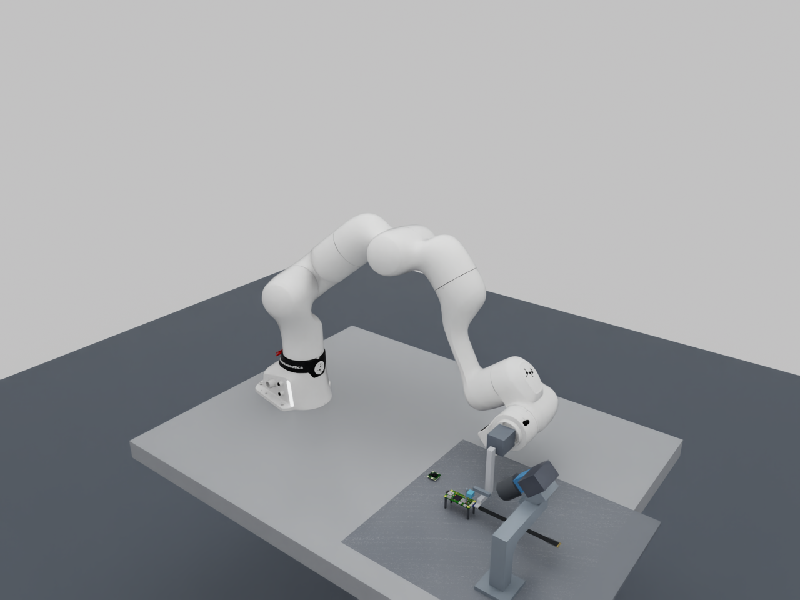
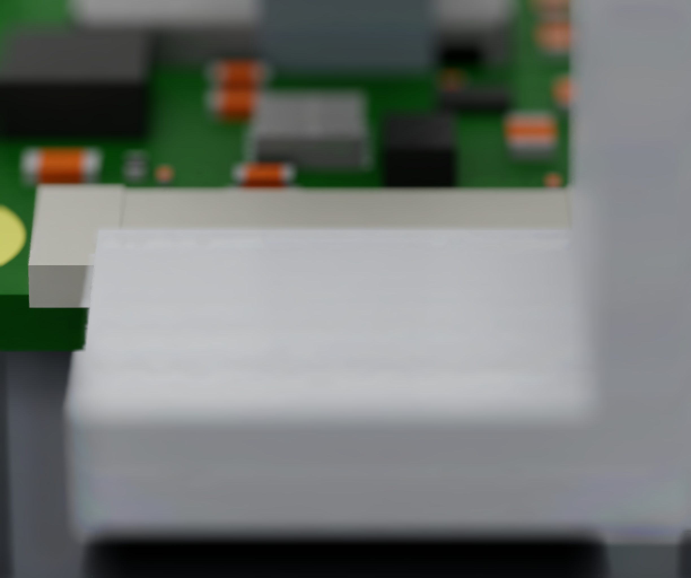
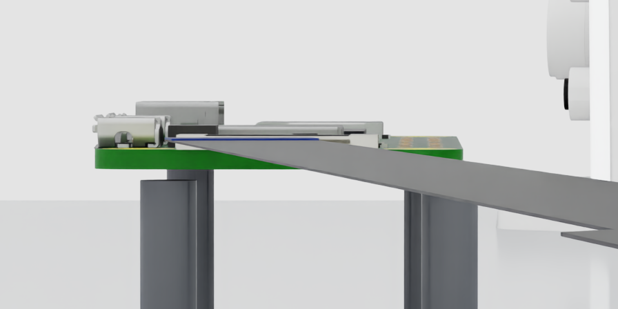
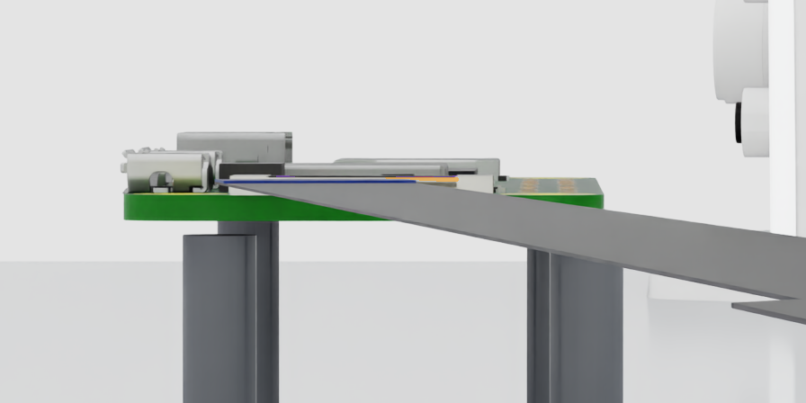
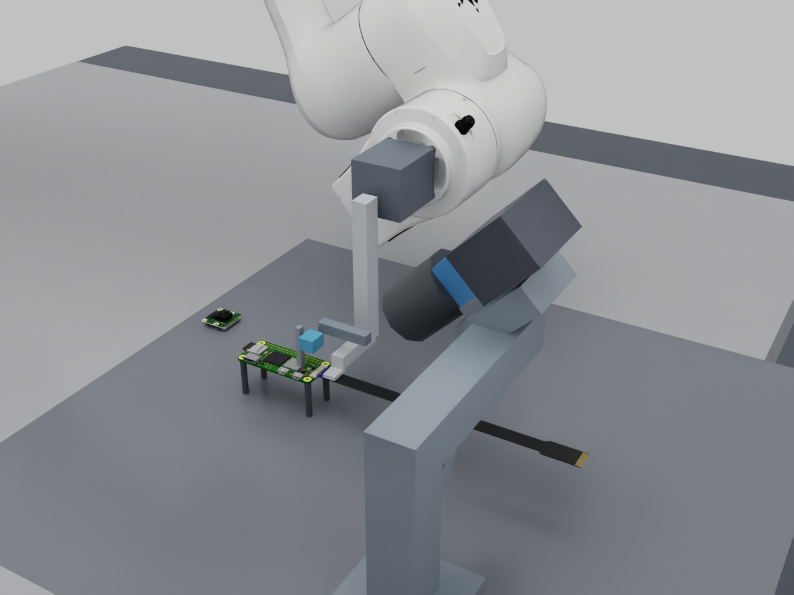

From a loose cable on the desk to a verified PCB connection.

The current FR3 / Zero 2 W workcell. A static Isaac Sim rendering; no insertion is occurring.
Simulation, perception, mechanics and the path to learned assembly.
28 September 2026 · UTC Snapshot through commit 30b6a78
FFC / FIELD NOTESRESEARCH EDITION 01
READING GUIDE
A map of the work.
This is a project notebook you can read away from the terminal. It explains what we built, why we changed direction, and what the evidence actually supports.
We want the robot to begin with an ungrasped ribbon cable on a desk and finish with a correctly seated, secured and independently verified connection.
The initial benchmark uses one separated cable, a fixed PCB and controlled lighting. Both cable ends are free. We will vary desk position, orientation, which face is up, and bounded curl. Clutter, tangled cables, an attached far end and a freely moving PCB are later extensions that need their own tests.
Skill
Evidence needed to move on
See the entrance
Visible upper and lower rims, cable leading edge and latch state; freshness and uncertainty checks.
Pick up the cable
Separation from the desk, a stable grasp, no unacceptable slip and enough exposed end.
Inspect and orient
Correct contact face and usable end pose; ambiguity triggers another view or regrasp.
Align without contact
Image-based relative pose inside a justified capture region, with the path still clear.
Contact and insert
Bounded motion with observed progress and a tested stop-and-retract response.
Seat and latch
Separate seating and latch evidence, followed by an electrical or functional check when available.
Recover and repeat
Failures detected, classified and handled within a fixed retry budget.
What counts as success
A completed command is not assembly evidence. Final verification must distinguish seating, latch closure, tool release, electrical function and damage. Simulation currently has no qualified electrical contact model. We can demonstrate mechanical subskills while keeping that final criterion explicitly unresolved.
FFC / FIELD NOTESRESEARCH EDITION 01
02 / CURRENT STATUS
A useful foundation. An unfinished assembly skill.
The project has reproducible scenes, tested observation software and several informative mechanical experiments. The current Pi cell has no active robot-control endpoint.
Area
Recorded status
What it does not establish
Scene and CAD
Pi 4 / Camera Module 3 and Zero 2 W assets imported; current mount study uses Zero 2 W.
Certified connector internals or manufacturing tolerances.
Camera mount
45° view; full-tool geometry; sampled arm clearance and continuous tool/cable translation bounds.
A fabricated bracket, stiffness, or full-cell collision certification.
ROS2 observations
Native RGB, CameraInfo, fixed camera TF, preprocessing and health supervision work.
Dynamic sensor timing or control-rate performance.
Perception
Pretrained DINOv3 entrance-feature study completed on earlier optics.
A trained/evaluated model for the current mounted macro view.
Mechanics
Segmented cable benchmarks and historical generic handling runs recorded.
Pi cable laminate calibration, reliable contact insertion or damage prediction.
Tactile and force
Needed interfaces and experimental roles identified.
A selected, calibrated tactile device or functioning sensor model.
Learning and action
Skill curriculum and observation boundary defined.
A trained action policy, VLA controller or RL insertion agent.
The latest completed milestone
Thirty-five consecutive processed observations arrived from the mounted macro simulation at roughly 1.2 fps. Publication-to-observation age was 22.5–44.9 ms in that short test. The 500 ms freshness guard correctly reports stale intervals between rendered frames.
The repository suite passed 97 tests, the ROS frontend passed three additional unit tests, and an isolated DDS fault suite passed eight cases. These are software checks; they do not measure physical assembly reliability.
FFC / FIELD NOTESRESEARCH EDITION 01
03 / HARDWARE
What is selected, and what is still a concept.
The user selected the Franka FR3. The original US$20,000 budget was subsequently set aside; there is no verified procurement quote or complete bill of materials.
Component
Choice or role
Status
Robot
Franka FR3; vendor FR3 v2.1 geometry and kinematics in Isaac.
Simulation asset selected.
Primary workpieces
Pi 4 Model B + Camera Module 3; Zero 2 W for the current sideways-entry study.
Imported scenes; physical parts not qualified here.
Macro camera
Basler ace 2 a2A2448-75ucBAS; Sony IMX547 color global shutter.
Simulation reference; no purchase.
Macro lens
Kowa LM35JC10M, 35 mm C-mount; 0.38× at 100 mm front working distance.
Nominal optics and dimensioned envelope.
Overview cameras
Manual-focus Arducam reference for desk and broader entrance views.
User’s exact model/lens remains unidentified; B0498 / IMX585 was a simulation reference.
End effector
Offset suction-to-pinch tool with deployment and clamp actuation.
Research mechanism; no commercial actuator SKU selected.
Required capabilities; device selection and calibration open.
The later press-on task
The phone-style flex connector presses down onto a PCB. It has different capture, seating and release mechanics from a side-entry ZIF cable. We will select a representative coupon and qualify it separately; no phone connector model or assembly result is claimed.
FFC / FIELD NOTESRESEARCH EDITION 01
04 / WORKPIECE MODEL
A detailed PCB still needs a trustworthy opening.
The Zero 2 W model is visually rich enough for scene development. Its original connector mesh did not expose the separate physical features needed for entrance perception.
Current near-entry RGB. The socket and cable are static proxies, rendered with uncalibrated finite-aperture blur.
The board
We extracted the named Zero 2 W assembly from the community Optocam Zero STEP model. It contains 94 leaf components and 478,024 triangles. Its 65 × 30 mm outline and 58 × 23 mm mounting-hole pattern were checked against the official mechanical drawing.
The assembly names a Molex 54548-2271 connector. That name does not certify the production Pi BOM. The original socket was a fused mesh with no articulated slider.
The replacement socket
An engineered substitute keeps the board context while making upper and lower entrance rims and the slider explicit. Its 11.7 mm opening width, 0.5 mm opening height and 0.8 mm slider travel are assumptions.
The slider is visually positioned in open/closed states. Contact springs, clamping and insertion resistance are not yet modeled as functioning mechanics.
The cable
The Zero reference is the 200 mm Standard–Mini family: 22 contacts at 0.5 mm pitch on one end and 15 at 1 mm on the other. The revision-two outline is 11.5 mm wide along most of its length, widening to 16 mm. Body thickness (0.14 mm), header thickness (0.30 mm), exposed length and stiffener dimensions remain modeling assumptions. The internal conductor routing and layered mechanics are unresolved.
FFC / FIELD NOTESRESEARCH EDITION 01
05 / OPTICS
Look into the entrance.
A whole-socket mask can tell us where the connector is. Insertion needs evidence about the small opening, the cable edge and what the gripper hides as it approaches.
Parameter
Selected simulation reference
Active image
2448 × 2048 pixels; 2.74 µm pitch
Lens and working distance
35 mm nominal; 0.38× magnification; 100 mm from lens front
Normal-plane field of view
17.651 × 14.767 mm
Nominal object sampling
7.211 µm per pixel, before optical blur and oblique projection
Exposure and gain off; white balance locked after calibration
Current rendering rate
About 1.2 fps in the mounted ROS preview; not the hardware target
How the simulated lens is constructed
A thin-lens equivalent matches the nominal magnification. It uses an object distance of 127.105 mm and image distance of 48.3 mm, placing the inferred principal plane 27.105 mm behind the lens front. The renderer uses an equivalent f-number of 11.04 to preserve the assumed pupil diameter of physical f/8.
The approximate one-pixel depth-of-field calculation gives 0.419 mm total, ignoring diffraction. A separate diffraction estimate gives an Airy diameter near 5.4 pixels at 550 nm. Pixel sampling therefore cannot be treated as resolved feature size or metrology accuracy.
We chose a conventional perspective macro lens for the first integration because it fits an ordinary camera-calibration model. A telecentric design remains an option if later measurements justify its different projection model and larger envelope.
FFC / FIELD NOTESRESEARCH EDITION 01
06 / MOUNTING
The complete tool changed the camera angle.
The original 25° view looked useful with small finger proxies. Once the full offset tool was included, it hid the entrance. We moved to 45° elevation.

Rejected: 25° with the complete tool. Zero labeled rim or leading-band pixels remained in the visibility probe.Selected: 45° near-entry view. The lower rim remains small, even when unobstructed.
The stand sits opposite the wrist, on the negative-Y side of the PCB. It uses a 30 mm square-section upright and cross-arm, a diagonal brace, a tilt saddle and an adapter envelope. The PCB supports and stand share a baseplate. A separate keep-out volume reserves USB plug, service-loop and strain-relief space.
Check
Result
Scope
Clearance
17.000 mm minimum projected separating gap
211 sampled IK poses; enclosing robot/tool/hardware boxes.
Translation sweep
17.000 mm lower bound
Continuous nominal tool and rigid-cable translations; robot links remain sampled.
Assembly allowance
15 mm remaining after assumed 2 mm budget
Compared with a 5 mm study requirement; not measured accuracy.
Feature retention
Upper rim 99.76%; lower rim 95.26%; leading band 100%
One 0.3 mm-gap pose versus a matching no-tool view; geometric labels only.
The lens front sits about 70.7 mm above and 70.7 mm horizontally from the target. The planned route withdraws, shifts sideways, then lifts. A direct lift under the camera is outside that route. Fasteners, bracket stiffness, all-cell collisions and latch contact remain unqualified.
FFC / FIELD NOTESRESEARCH EDITION 01
07 / ARCHITECTURE
What the robot may know.
The observation boundary is a central design decision: the future policy must operate from measurements that could exist on the real workcell.
Runtime inputs
Images, calibration, acquisition timestamps, measured robot/tool state and appropriately modeled contact or tactile measurements. The estimator should expose uncertainty and missing evidence.
Offline information
USD geometry, instance masks and exact object poses may generate supervised labels and score predictions. They must not enter the deployed estimator, policy, critic, rewards or skill transitions.
FFC / FIELD NOTESRESEARCH EDITION 01
08 / ROS2 + CLASSICAL VISION
Carry the image geometry all the way through.
The native camera pipeline is implemented in a separate ROS2 Jazzy container. Its input is rendered RGB and camera calibration; it has no scene or offline-label mount.
Channel / object
Content and behavior
/cell/cameras/macro/image_raw
2448 × 2048 RGB8 with acquisition stamp and macro_optical_frame.
/cell/cameras/macro/camera_info
Matching stamp, native intrinsics, distortion and image dimensions.
/tf_static
Fixed world-to-camera optical calibration; no object-pose publication.
Accepted/rejected counts, image statistics and watchdog reasons.
/cell/task/status
observation_only or stale; motion_permitted remains false.
The classical frontend
Exact timestamp pairing comes first. The node then validates frame identity, native dimensions, encoding, payload size, calibration and age. It rejects duplicates, reordered timestamps, frames older than 500 ms, timestamps more than 5 ms into the future, and changes to an already accepted intrinsic calibration.
OpenCV rectifies the image, halves it with area interpolation and adds four black pixels at each side. The resulting 1232 × 1024 image is divisible by the DINOv3 patch size. Intrinsics use the same pixel-center mapping; the calibrated image center becomes (615.75, 511.75) for the current profile.
Canny edges and brightness/sharpness diagnostics accompany the RGB. We have not enabled arbitrary sharpening or contrast enhancement. The planned learned input is RGB; whether extra edge channels help requires a controlled experiment.
FFC / FIELD NOTESRESEARCH EDITION 01
09 / TRANSPORT EVIDENCE
Small messages worked. The image needed more room.
The first ROS test discovered its peers but did not deliver the 15 MB native image. Testing the actual payload exposed a problem that a heartbeat-only check would have missed.
35consecutive processed frames
1.19approximate frames / second
22.5–44.9publication age in milliseconds
The explicit Fast DDS profile allocates a 128 MiB shared-memory segment with a 16 MiB maximum message size. The containers share host IPC and use localhost discovery. A second issue caused lost image/calibration pairs with depth-one input queues; retaining four input samples resolved it in the subsequent live check. The output still retains only the latest observation.
Observation health recovers; motion remains false.
What the latency number means
The stamp is assigned after the static render returns. The measured age covers publication, transport, processing and observation receipt; it excludes the preceding render time and is not exposure-to-control latency. A dynamic simulator will need a consistent simulation clock and an acquisition-time contract.
At about 1.2 fps, the next frame arrives after the 500 ms freshness deadline. The alternating stale status is expected and remains visible. We have not relaxed the guard to make the dashboard appear healthier.
FFC / FIELD NOTESRESEARCH EDITION 01
10 / PERCEPTION HISTORY
Better masks helped. They did not finish the task.
We began with whole-component segmentation, then narrowed the objective to the physical features that constrain insertion.
Early small segmentation baseline
Established image capture, offline labels, isolated inference and held-out review. Cable, contacts, stiffener and board sockets were component classes. Their centroids were review measurements, not grasp points.
DINOv2 component model
A frozen foundation encoder and task head improved the Zero component masks. A later two-head model was evaluated against the older model on the same 240 independent test images.
A reliability gate that abstained
Pooled foreground mean IoU improved from 91.16% to 93.74%; mini-end IoU improved from 80.92% to 88.87%. Neither camera met the calibration rule of zero bad accepts and at least 20 accepted views. Both policies abstained on every test image.
DINOv3 entrance features
After official access was approved, pretrained ViT-B/16 features supported separate rim, leading-band and slider classes. The task and geometry changed, so these results are not a controlled DINOv2-versus-DINOv3 comparison.
Mounted macro domain
The camera, projection, view angle, preprocessing and full-tool occlusion are now different. A new dataset and frozen-model test are required before connecting inference.
SAM 3.1
The official checkpoint was downloaded and GPU inference was made to run in its own container. The initial six probes contained no cable/socket target and returned empty masks. That is a compatibility check on negative scenes, not demonstrated localization performance. Any future prompts must be fixed or image-derived, never supplied from simulator boxes or points.
FFC / FIELD NOTESRESEARCH EDITION 01
11 / DINOv3 RESULTS
The thin cable feature is still the difficult part.
The earlier camera study used official frozen DINOv3 features with an RGB-detail decoder. It learned useful rim structure, but the leading band and latch decisions remain weak.

A held-out RGB frame from the earlier camera domain.

The corresponding learned overlay. Colors indicate classes.
Feature
Pooled IoU
Mean visible-image IoU
Upper entrance rim
89.2%
85.4%
Lower entrance rim
88.7%
78.0%
Cable leading band
39.3%
32.3%
The selected focal-loss candidate used 120 epochs and validation-only checkpoint selection. It was frozen before a fresh test set of 48 scenes / 96 camera images was generated. Development contained 120 scenes, with both views of each scene kept in the same split. The change in epoch budget means the result is not a loss-only ablation.
Provisional slider classification was correct in 52 of 81 visibly labeled images, unknown in 10 and wrong in 19. Fifteen images had no observable slider label; no slider false positive was reported for those images. These small counts do not establish reliable latch verification.
How to interpret the scores
Pooled IoU accumulates pixels before computing overlap, so larger visible features have more influence. Mean visible-image IoU weights each qualifying image equally. Both describe mask overlap; neither is a metric error in the cable-tip frame.
FFC / FIELD NOTESRESEARCH EDITION 01
12 / NEXT PERCEPTION EXPERIMENT
Train through the camera we intend to use.
The next dataset must include the selected 45° mount and complete tool. The old crop model cannot be silently applied to the new 2448 × 2048 sensor profile.
Variation that matters
Include board translation and small rotations, cable skew, different approach gaps, jaw setback, partial occlusion, dim light, glare, focus drift and absent cable/socket cases. Keep image visibility realistic: hidden features receive no visible-pixel label. Do not change a material’s color just to make a class easier to detect.
Training must use the same rectification, area resize, padding and pixel-center calibration as the live frontend. Record every random seed and camera profile. Exposure and blur variations are sensitivity tests until the optical model is calibrated.
The acceptance report
Report each rim separately, thin-band errors, boundary displacement, empty-view false positives and latch errors. Also report abstention coverage and failures among accepted views. Before action, convert observed feature uncertainty into a justified relative-pose uncertainty; an attractive overlay is insufficient.
FFC / FIELD NOTESRESEARCH EDITION 01
13 / MECHANICS HISTORY
The physics had to earn our trust too.
Early videos looked plausible while the cable sag was badly wrong. Independent numerical references exposed that error and changed the solver configuration.
Segmented ribbon model
The historical generic cable was a chain of rigid segments with rotational compliance. A 50 mm benchmark used a nominal homogeneous 8 mm-wide, 0.3 mm-thick strip with E = 3 GPa. These parameters are assumptions for that benchmark; they are not the material specification of the current Raspberry Pi cable.
Short-span timestep / iterations
Sag
Error against discrete reference
4.1667 ms / 32
13.361 mm
+2,391%
0.25 ms / 128
0.83577 mm
+55.8%
0.125 ms / 255
0.61686 mm
+15.0%
0.0625 ms / 255
0.56130 mm
+4.6%
Those rows held the spring stiffness fixed. The discrete chain reference accounts for its own boundary conditions; comparing it only with a continuum formula would conceal part of the numerical error.
The later full-span check
An independent nonlinear energy minimization gave 46.1317 mm tip sag for the 150 mm chain. The selected PGS profile—8 kHz, 255 position iterations and four velocity iterations—gave 46.0810 mm in an awake repeat, about −0.110%. The static benchmark used extra body drag solely to remove transient motion. That drag is not permitted as a general handling shortcut.
Native surface FEM
The shell benchmark also showed timestep, mesh and iteration sensitivity. Its reported sag/reference ratios ranged from 1.323 to 1.906 across the stated cases. Full native-shell handling was not implemented or qualified. Static agreement in a segmented model does not establish contact force, twist, damping or laminate behavior.
FFC / FIELD NOTESRESEARCH EDITION 01
14 / PHYSICS ROADMAP
Realism needs several separate checks.
We need a model that reproduces the behaviors the controller depends on: bending, twist, grip slip, edge contact, buckling and seating resistance.
Model layer
What to establish before relying on it
Cable shape and inertia
Correct outline, mass distribution, thickness, stiffeners and a justified bending/twist response.
Laminate reference
An offline layered model or suitable mechanical reference for copper/polymer structure and end reinforcement.
Contact thickness
No tunneling through the desk, jaw or entrance; inspect collision offsets at the relevant scale.
Grip behavior
Finite normal force, translation and rotation slip, release and changing unsupported length.
Connector resistance
Entrance edges, internal contacts and latch mechanics that generate plausible force/displacement behavior.
Sensor rendering
Observed force/tactile signals with defined frames, bias, filtering, rate and uncertainty.
Numerical convergence
Timestep, mesh and solver sweeps across bending and contact cases; energy and penetration diagnostics.
Use expensive models as references
A detailed FEA model can support offline coupon studies, such as cantilever deflection, twist or controlled edge compression. A faster reduced model may be more practical for learning rollouts if it matches the reference over the task’s operating range. We have not established a validated layered FEA model for this Pi cable.
Before physical specimens are available, numerical convergence, analytic references and documented parameter ranges can support a bounded simulation proof of concept. Results must retain those assumptions. Physical transfer later needs measured bend/twist, grip-slip and insertion force/displacement data.
FFC / FIELD NOTESRESEARCH EDITION 01
15 / PICKUP + PRESENTATION
Get hold of the cable without hiding its end.
The research tool first lifts the cable by suction, then places a lower jaw beneath it for a finite-force mechanical pinch. The unsupported end must remain visible and stable.

Complete tool and stand envelopes. The current static scene does not demonstrate a physical grasp.
Direct handoff
Acquire an insulated region, lift enough to deploy the lower jaw, close with suction still supporting the cable, verify retention, then release vacuum. Observe slip during the subsequent raise and approach.
It avoids an extra placement but asks the tool to handle more of the initial curl and orientation variation.
Passive presentation fixture
Place and support the cable, release it, then regrasp in a more repeatable pose. The fixture may improve visibility and exposed-length control, at the cost of another contact and recovery stage.
The user requested a comparison of both routes before choosing the final mechanism.
What the historical trials showed
After substantial solver and tool corrections, one generic direct sequence completed in 41.760 simulated seconds; one fixture sequence completed in 66.789 seconds. Both reached about 3.801 mm geometric depth. These runs used privileged cable-tip state and an open clearance slot with zero cable/connector contact. They establish neither a camera-driven Pi skill nor a reliability ranking.
The next pickup study must measure acquisition, slip, exposed length, orientation and damage proxies separately. A stable hold should be verified before the robot enters the camera’s close approach corridor. Vacuum pressure, jaw load/displacement and tactile slip are required sensing roles, not active devices today.
FFC / FIELD NOTESRESEARCH EDITION 01
16 / ACTION SKILLS
Approach in small steps, and verify each transition.
The first action baseline should begin with a securely held cable near an open connector. Desk pickup and full-task composition follow once that smaller problem works from sensor feedback.
Inspect and orient
Move the held end into a repeatable inspection view. Estimate the leading edge, contact face, orientation and visible deformation. A single oblique image can leave depth ambiguous; another calibrated view or deliberate small viewpoint change may be needed. If the estimate remains ambiguous, regrasp or stop.
Align without touching
Use visual feedback to reduce relative position and angle error while keeping a known clearance. Evaluate against independently held-out reference poses offline. Set the capture region from the assumed simulation geometry with explicit uncertainty; revise it when real dimensions become available. Mask IoU is not an alignment tolerance.
Contact and insertion
Advance with short bounded commands and watch both image progress and contact response. Detect edge catches, skew, buckling, slipping and blocked entry. A recovery should stop, unload and retract along a tested route before attempting another observation or alignment. Actual force thresholds remain unset until the selected model and later specimens support them.
Seating and latch
Hold the cable while checking seating evidence. Operate the latch as a separate skill with its own tool access, contact model and failure modes. Verify again after release: a cable can move while the tool withdraws or while the latch closes.
The controller must remain bounded under lost tracking, stale frames and sensor disagreement. Robot-side stop behavior and communication-loss behavior need tests independent of the learned policy.
FFC / FIELD NOTESRESEARCH EDITION 01
17 / LEARNING
Learn one observable skill at a time.
No action policy has been trained for the current Pi cell. The planned progression makes it possible to identify whether a failure comes from sensing, mechanics, control or learning.
Stage
Experiment
Fair comparison
Sensor-driven baseline
A bounded visual/contact controller for pre-grasped alignment, then insertion and recovery.
Same sensor streams and verified success criteria as later policies.
Behavior cloning
Train on successful and corrective demonstrations generated through sensor feedback.
Hold out starts, offsets and failure cases; count intervention and retries.
Action-sequence policies
Compare action chunking or a diffusion policy if temporal prediction helps.
Same demonstrations, observations, reset distribution and evaluation budget.
Residual RL
Learn limited corrections around a working controller.
Bounded actions; sensor-conditioned actor, critic and rewards; independent outcomes.
Whole-task coordination
Join pickup, inspection, alignment, insertion, latching and recovery.
Evaluate each stage and full-task completion, including failed acquisitions.
Optional VLA
Study language-conditioned task choice or broader object generalization.
Compare against the smaller policy on tasks where language adds measurable value.
What goes into the policy
Use calibrated image history, robot/tool measurements, contact/tactile history, observation health and task context. The state estimator may summarize recent evidence and uncertainty. Exact cable vertices, hidden insertion depth or a true latch transform must not become actor, critic, reward or transition shortcuts.
What earns reward
Use observable progress and independently checked outcomes. Test any learned success detector on deliberately bad assemblies before letting it provide rewards. Without a qualified electrical model, simulation cannot award electrically complete assembly success.
Isaac Lab is a candidate framework for later task orchestration and rollout training; it is not integrated in the recorded milestone. The expensive 8 kHz historical physics profile must be profiled and, if needed, replaced by a separately qualified faster model before choosing a training budget.
FFC / FIELD NOTESRESEARCH EDITION 01
18 / EVALUATION
Make failures part of the experiment.
A useful result needs a declared test distribution, a fixed policy and a denominator that includes failed pickups, timeouts and interventions.
Residual error before contact and false readiness decisions.
Contact
Edge hit, skew, blocked slot, cable buckle and slip.
Detection delay, peak modeled load, retract outcome and repeated failure.
Latch and verification
Shallow seating, failed closure, movement on release.
False success, missed failure and verification disagreement.
System faults
Stale/reordered frames, lost tracking, delayed or missing contact data.
Stop latency, safe state, recovery and retained evidence.
Split the data by scene and episode
Multiple camera views of the same scene belong together. Freeze weights, preprocessing, thresholds and prompt rules before the independent test. Preserve failed runs instead of overwriting them. Inspect difficult cases as images and trajectories, not only as average scores.
Report more than a success percentage
Include sample count, first-attempt completion, completion within a fixed retry budget, intervention rate, time and failure category. For selective perception, report accepted coverage alongside error among accepted cases. An always-abstain model can avoid bad accepts while providing no useful decisions.
Domain randomization should vary plausible uncertainty and preserve physical correlations. Cable thickness changes mass, stiffness and mating clearance together. Randomization cannot repair a missing contact mechanism or an unrealistic sensor channel.
FFC / FIELD NOTESRESEARCH EDITION 01
19 / NEXT MILESTONES
What we do next, and what unlocks motion.
The native ROS camera milestone is complete. The next increment is a new mounted-camera perception study, followed by a sensor-driven pre-contact skill.
Mounted-camera development set
Capture full-tool approaches and the agreed perturbations. Audit native images, feature labels, absent targets and split separation. Keep the optical assumptions attached to the data.
Frozen DINOv3 macro candidate
Train with the live OpenCV transform, select on validation, freeze all runtime components, then capture and score a fresh final test. Compare SAM only with fixed or image-derived prompts.
Relative-pose estimator
Turn visible edges into a calibrated cable-to-mouth estimate with uncertainty. Establish when another view is necessary. Test without touching the connector.
Mechanics and sensor qualification
Resolve finite-thickness cable contact, bending/twist, grip slip and connector resistance. Define realistic tactile/contact outputs and their timing. Qualify the full approach and retract geometry.
Pre-grasped sensor-driven insertion
Demonstrate bounded alignment, contact, progress detection and recovery across declared variation. Keep latch and final verification separate.
Complete the desk-to-PCB chain
Add pickup, orientation, fixture comparison, latching and release. Only then evaluate the entire task and begin controlled learning comparisons.
Decisions still open
Commercial gripper/actuator selection; tactile technology and placement; insertion-contact sensing; exact Arducam identification; manufacturable mount and fixture details; lighting hardware; connector internals and material parameters. None should be silently treated as a purchased, calibrated component.
FFC / FIELD NOTESRESEARCH EDITION 01
20 / WORKING WITH THE PROJECT
Keep the evidence easy to revisit.
The repository, live site and experiment records serve different purposes. Use the records when you need to distinguish a tested result from an illustrative rendering.
Read and watch
Live lab shows the cell, current work and curated reviews. Architecture explains the longer-term system. The source repository contains code, experiment notes and configuration. Older pages may describe an earlier milestone; this notebook resolves the current status through commit 30b6a78.
The live feed is a stationary rendered scene. Its images carry freshness information; when rendering pauses, the page retains a saved frame. Browser notes are local to that browser and are not an agent inbox. There is no actuator or terminal endpoint on the public site.
Runtime pieces
Container / environment
Purpose
ffc-isaac:6.1.0
USD scenes, renderer, historical physics and current native camera publisher.
ffc-foundation:4.57.6
Pinned foundation-model runtime used for DINO feature studies.
ffc-sam3:2345a4a
Separate SAM 3.1 compatibility/inference environment.
ffc-ros2:jazzy-dinov3
ROS2 Jazzy, OpenCV frontend, observation supervisor and model dependencies.
Local Python / CAD environments
Source tests, audits, STEP conversion, reports and publishing.
These commands assume the existing Isaac image and scene assets. Do not start a second renderer over the live preview. Follow LAB_LIVE.md to stop it cleanly first.
Every experiment gets a fresh output directory, frozen source/configuration references, raw observations, diagnostic results and verified media. Preserve failures. Historical state-driven experiments require deliberate selection and must remain separate from the new observation-only pipeline.
FFC / FIELD NOTESRESEARCH EDITION 01
REFERENCE DESK
Sources, provenance and useful terms.
This edition synthesizes the repository’s recorded experiments and the decisions in our conversation. It does not claim a new hardware test or an independent literature review.
Data excluded from training, model selection and threshold tuning.
Image attribution
Zero PCB geometry derives from Doruk Kumkumoglu’s Optocam Zero, CC BY-SA 4.0. Changes include board extraction, USD tessellation, scene placement, lighting and added cable/camera/tool geometry. Derived scene images retain CC BY-SA 4.0. FR3 geometry comes from the official Franka simulation asset; the tool and stand are project design envelopes. This notebook’s original prose and diagrams are also offered under CC BY-SA 4.0, excluding third-party material subject to its own terms.